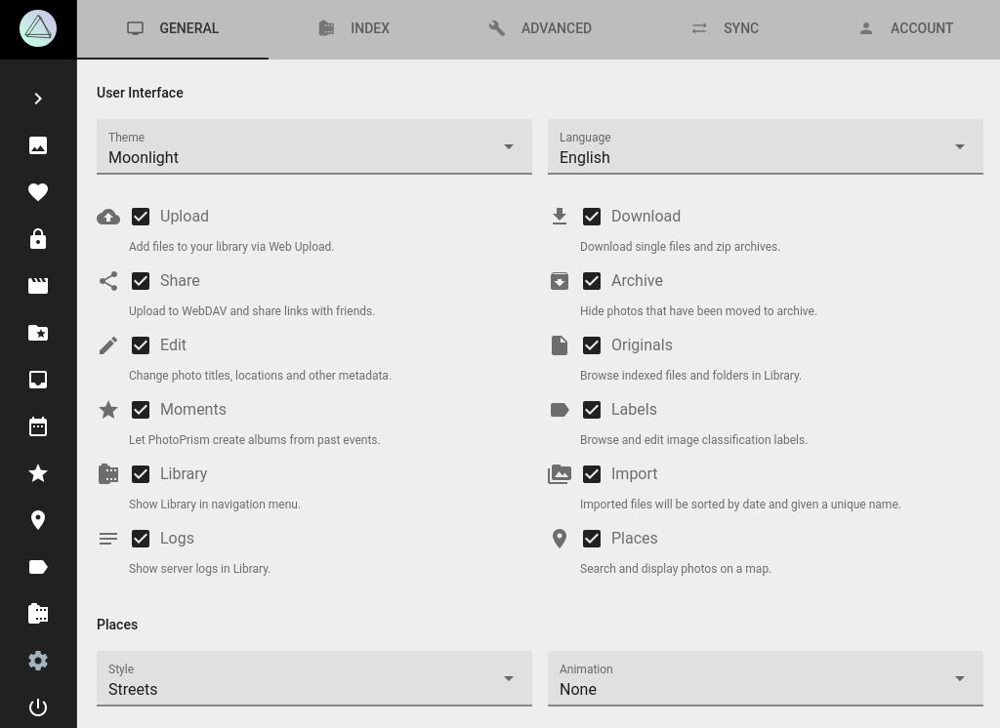

Allgemeine Einstellungen¶
In den Allgemeinen Einstellungen kannst du die Eigenschaften der Benutzeroberfläche sowie der Karten konfigurieren.

Benutzeroberfläche¶
Hier kannst du das Design und die Sprache der Benutzeroberfläche ändern.
Um PhotoPrism an deine individuellen Bedürfnisse anzupassen, kannst du die folgenden Bereiche und Funktionalitäten ein- und ausschalten. Deaktivierte Bereiche tauchen nicht in der Hauptnavigation auf.
Upload¶
Wenn diese Option deaktiviert ist, können keine Dateien über Upload hochgeladen werden. Diese Einstellung kann hilfreich sein, wenn du anderen Personen Zugriff auf dein PhotoPrism gibst, diese aber keine Dateien hochladen dürfen.
Download¶
Wenn diese Option deaktiviert ist, können Dateien nicht über die App heruntergeladen werden.
Teilen¶
Wenn diese Option deaktiviert ist, können Alben weder geteilt noch zu anderen Diensten (wie ownCloud) hochgeladen werden.
Private Aufnahmen verbergen¶
Wenn diese Option aktiviert ist, werden private Fotos und Videos nicht in Fotos, Videos, Favoriten, Kategorien, Karten und geteilten Alben angezeigt.
Archivieren¶
Diese Option steuert das Archiv. Fotos die archiviert wurden, bevor du die Option deaktivierst, werden wieder in Fotos/Videos dargestellt.
Bearbeiten¶
Wenn diese Option deaktiviert ist, kannst du keine Metadaten editieren.
Löschen¶
Wenn diese Option aktiviert ist, können Dateien endgültig aus dem Archiv gelöscht werden, um Speicherplatz freizugeben.
Originale¶
Wenn diese Option deaktiviert ist, wird der Bereich Originale nicht angezeigt.
Erlebnisse¶
Wenn diese Option deaktiviert ist, wird der Bereich Erlebnisse nicht angezeigt.
Kategorien¶
Wenn diese Option deaktiviert ist, wird der Bereich Kategorien nicht angezeigt. Außerdem kannst du keine Kategorien hinzufügen oder bearbeiten.
Dateien¶
Wenn diese Option deaktiviert ist, wird der Bereich Dateien nicht angezeigt.
Import¶
Wenn diese Option deaktiviert ist, gibt es keine Möglichkeit Fotos zu importieren. In diesem Fall musst du neue Fotos über eine Indexierung hizufügen.
Logs¶
Wenn diese Option deaktiviert ist, werden keine Server-Logs angezeigt.
Karten¶
Wenn diese Option deaktiviert ist, wird der Bereich Karten nicht angezeigt.
Karten¶
Hier kannst du den Kartenstil und die Geschwindigkeit von Animationen einstellen. PhotoPrism bietet dir 4 hochauflösende Kartenansichten.
Um deinen Bildern Informationen wie Land, Stadt oder Kategorie hinzuzufügen, haben wir kürzlich PhotoPrism Places in Betrieb genommen. PhotoPrism Places ist unsere eigene Geocoding API, basierend auf OpenStreetMap. Zusätzlich werden wir in Zukunft Informationen über öffentliche Events bereitstellen, die an bestimmten Orten stattgefunden haben. Dadurch können beispielsweise automatisch Alben von Musikfestivals oder Sportevents erzeugt werden.